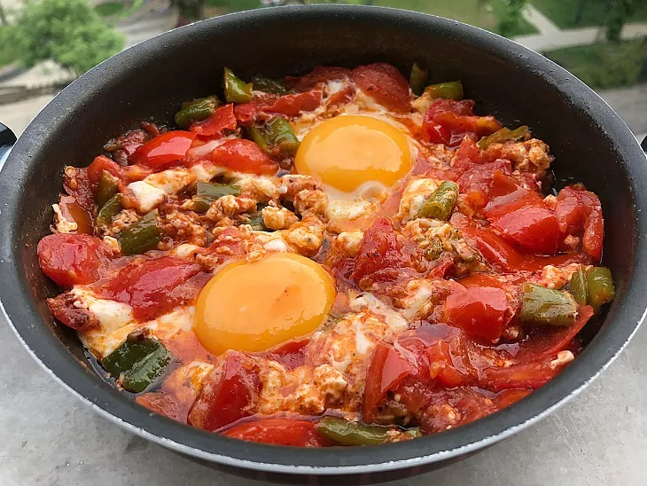

Menemen Tarifi

Mantının yapılışı
İçindekiler
- Un
- Yağsız dana kıyma
- Tereyağı
- Yoğurt
Yapılış:
- Büyük bir kaba suyu, yumurtayı ve tuzu alıp karıştırın.
-
Sonra unu da azar azar ilave edip, sert bir hamur olacak şekilde
yoğurun.
- Hazırladığınız hamuru 20 dakika dinlendirin.
-
Hamuru açacağınız yere çok az un serpin, üzerine hamuru koyarak üzerine
de un serpin.
anasayfa